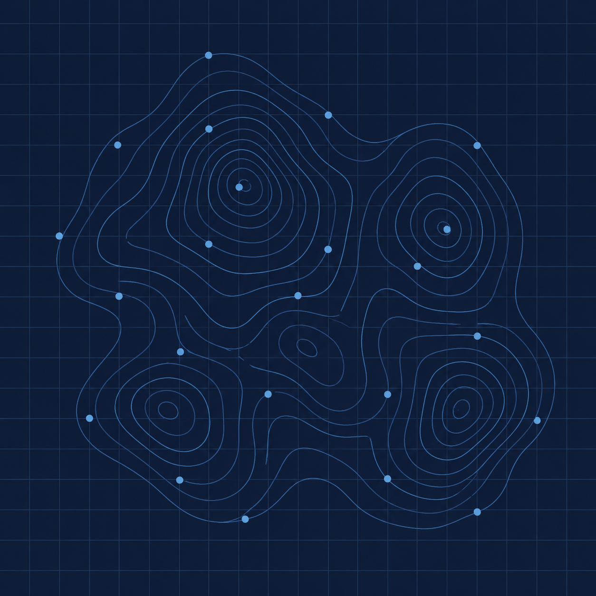
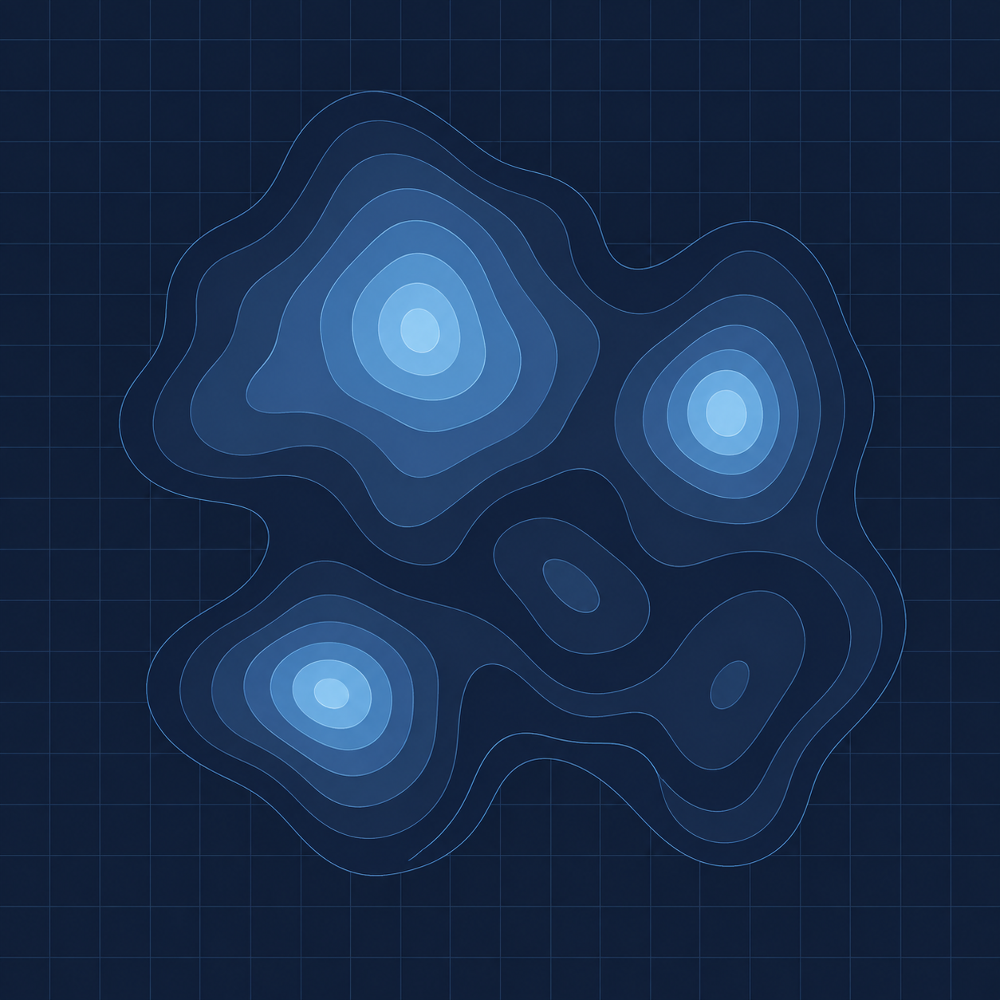
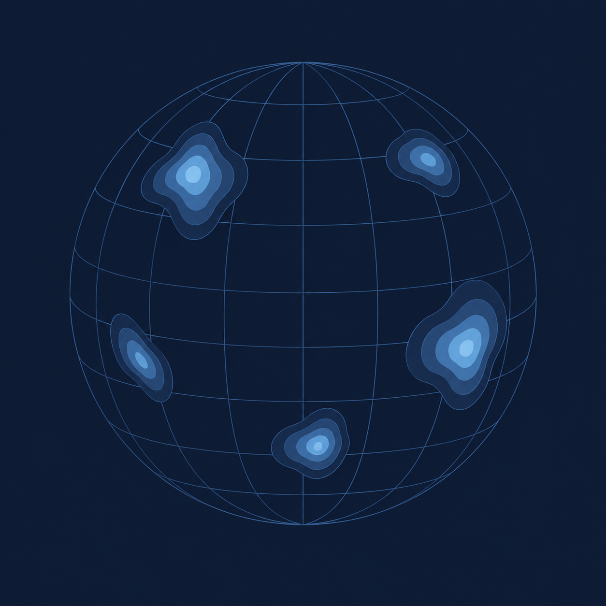

Mission
Deliver critical minerals production to U.S. and allied supply chains — the resources that power the 21st-century economy.
Who we are
Mission
Deliver critical minerals production to U.S. and allied supply chains — the resources that power the 21st-century economy.
Opportunity
A U.S.-domiciled platform pursuing greenfield critical minerals exploration globally and the only such company active in West Africa.
Execution
A world-class team of U.S. diplomacy experts and mining executives who have made discoveries and built mines across West Africa.
Exploration approach

Survey data
We systematically examine geochemical and geophysical surveys to identify highly prospective areas that warrant further exploration.

Anomaly modeling
Interpolated prospectivity surfaces rank ground for dozens of metals, surfacing coherent multi-commodity anomalies before any fieldwork.

Global deployment
The same workflow runs in any jurisdiction with national survey coverage: a repeatable, capital-light engine to secure the best ground worldwide.
CRITICAL MINERALS. PROSPECTIVE GROUND. AMERICAN ALIGNMENT.
About us — Differentiation
Three capabilities that are difficult to assemble in one vehicle.
A leadership team with repeated exploration success in frontier jurisdictions, including discoveries developed into commissioned, producing mines.
Experience navigating the U.S. federal funding ecosystem, with the relationships and process knowledge to access sovereign-backed capital.
A U.S.-domiciled platform running greenfield critical minerals exploration across multiple jurisdictions — today the only such company active in West Africa, our first market.